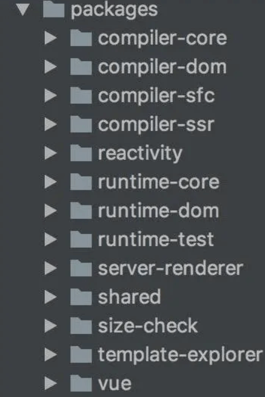
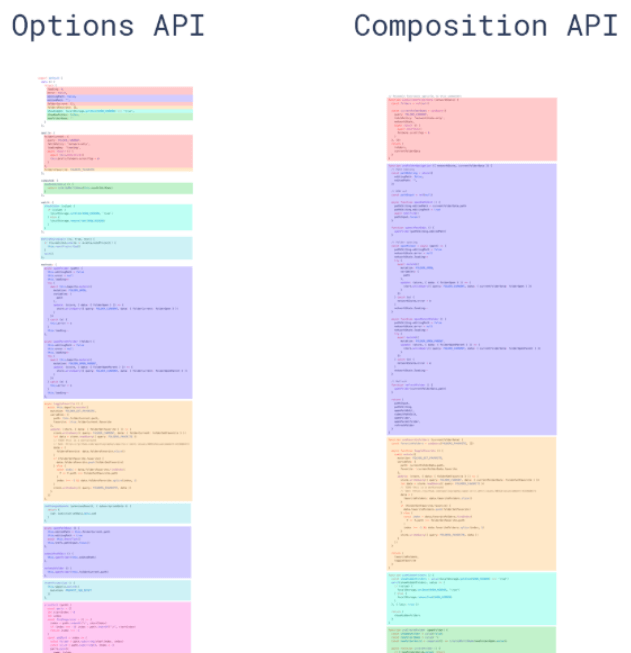

Vue3.0的设计目标是什么？做了哪些优化?
参考答案
一、设计目标
不以解决实际业务痛点的更新都是耍流氓，下面我们来列举一下Vue3之前我们或许会面临的问题
- 随着功能的增长，复杂组件的代码变得越来越难以维护
- 缺少一种比较「干净」的在多个组件之间提取和复用逻辑的机制
- 类型推断不够友好
bundle的时间太久了
而 Vue3 经过长达两三年时间的筹备，做了哪些事情？
我们从结果反推
- 更小
- 更快
- TypeScript支持
- API设计一致性
- 提高自身可维护性
- 开放更多底层功能
一句话概述，就是更小更快更友好了
更小
Vue3移除一些不常用的 API
引入tree-shaking，可以将无用模块“剪辑”，仅打包需要的，使打包的整体体积变小了
更快
主要体现在编译方面：
- diff算法优化
- 静态提升
- 事件监听缓存
- SSR优化
下篇文章我们会进一步介绍
更友好
vue3在兼顾vue2的options API的同时还推出了composition API，大大增加了代码的逻辑组织和代码复用能力
这里代码简单演示下：
存在一个获取鼠标位置的函数
import { toRefs, reactive } from 'vue';
function useMouse(){
const state = reactive({x:0,y:0});
const update = e=>{
state.x = e.pageX;
state.y = e.pageY;
}
onMounted(()=>{
window.addEventListener('mousemove',update);
})
onUnmounted(()=>{
window.removeEventListener('mousemove',update);
})
return toRefs(state);
}我们只需要调用这个函数，即可获取x、y的坐标，完全不用关注实现过程
试想一下，如果很多类似的第三方库，我们只需要调用即可，不必关注实现过程，开发效率大大提高
同时，VUE3是基于typescipt编写的，可以享受到自动的类型定义提示
三、优化方案
vue3从很多层面都做了优化，可以分成三个方面：
- 源码
- 性能
- 语法 API
源码
源码可以从两个层面展开：
- 源码管理
- TypeScript
源码管理
vue3整个源码是通过 monorepo 的方式维护的，根据功能将不同的模块拆分到packages 目录下面不同的子目录中

这样使得模块拆分更细化，职责划分更明确，模块之间的依赖关系也更加明确，开发人员也更容易阅读、理解和更改所有模块源码，提高代码的可维护性
另外一些 package（比如 reactivity 响应式库）是可以独立于 Vue 使用的，这样用户如果只想使用 Vue3 的响应式能力，可以单独依赖这个响应式库而不用去依赖整个 Vue
TypeScript
Vue3是基于typeScript编写的，提供了更好的类型检查，能支持复杂的类型推导
性能
vue3是从什么哪些方面对性能进行进一步优化呢？
- 体积优化
- 编译优化
- 数据劫持优化
这里讲述数据劫持：
在vue2中，数据劫持是通过Object.defineProperty ，这个 API 有一些缺陷，并不能检测对象属性的添加和删除
Object.defineProperty(data, 'a',{
get(){
// track
},
set(){
// trigger
}
})尽管 Vue为了解决这个问题提供了 set 和delete 实例方法，但是对于用户来说，还是增加了一定的心智负担
同时在面对嵌套层级比较深的情况下，就存在性能问题
default {
data: {
a: {
b: {
c: {
d: 1
}
}
}
}
}相比之下，vue3是通过proxy监听整个对象，那么对于删除还是监听当然也能监听到
同时Proxy 并不能监听到内部深层次的对象变化，而 Vue3 的处理方式是在 getter 中去递归响应式，这样的好处是真正访问到的内部对象才会变成响应式，而不是无脑递归
语法 API
这里当然说的就是composition API，其两大显著的优化：
- 优化逻辑组织
- 优化逻辑复用
逻辑组织
一张图，我们可以很直观地感受到 Composition API 在逻辑组织方面的优势

相同功能的代码编写在一块，而不像options API那样，各个功能的代码混成一块
逻辑复用
在vue2中，我们是通过mixin实现功能混合，如果多个mixin混合，会存在两个非常明显的问题：命名冲突和数据来源不清晰
而通过composition这种形式，可以将一些复用的代码抽离出来作为一个函数，只要的使用的地方直接进行调用即可
同样是上文的获取鼠标位置的例子
import { toRefs, reactive, onUnmounted, onMounted } from 'vue';
function useMouse(){
const state = reactive({x:0,y:0});
const update = e=>{
state.x = e.pageX;
state.y = e.pageY;
}
onMounted(()=>{
window.addEventListener('mousemove',update);
})
onUnmounted(()=>{
window.removeEventListener('mousemove',update);
})
return toRefs(state);
}组件使用
import useMousePosition from './mouse'
export default {
setup() {
const { x, y } = useMousePosition()
return { x, y }
}
}可以看到，整个数据来源清晰了，即使去编写更多的 hook 函数，也不会出现命名冲突的问题
Vue 3.0的设计目标是解决实际业务痛点，提供更小、更快、更友好的开发体验。它通过以下几个方面的优化来实现这一目标：
更小
- 移除不常用的API，减少代码体积。
- 引入tree-shaking，仅打包需要的模块，减小整体体积。
更快
- 编译方面进行了diff算法优化、静态提升、事件监听缓存和SSR优化，以提高性能。
更友好
- 同时支持Options API和Composition API，增加了代码的逻辑组织和代码复用能力。
- 基于TypeScript编写，提供更好的类型检查和类型推导。
优化方案
- 源码管理：采用monorepo方式，将不同功能拆分到不同的子目录中，提高代码的可维护性。
- TypeScript：提供更好的类型检查和类型推导。
- 性能：从体积、编译和数据劫持三个方面进行优化。
- 语法API：Composition API优化了逻辑组织和逻辑复用。